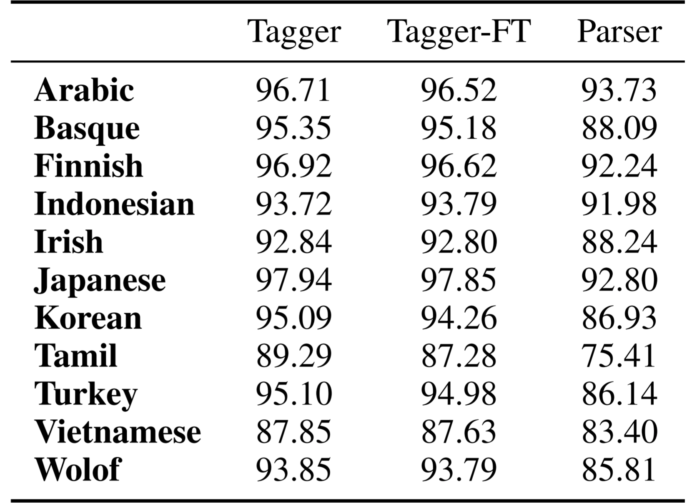

What Taggers Fail to Learn, Parsers Need the Most
Mark Anderson and Carlos Gómez-Rodríguez
Motivation
WebSlides is an open source solution by @jlantunez. If you have additional questions, get in touch!
Why WebSlides?
There are excellent presentation tools out there. WebSlides is about good karma and sharing content. Hypertext, clean code, and beauty as narrative elements.

Is WebSlides a framework?
We're all tired of heavy CSS frameworks. WebSlides is a starting point that provides basic structural components and a scalable CSS architecture.
What can I do with WebSlides?
WebSlides is a cute solution for making HTML presentations, landings, and portfolios. Put content wherever you want, add background images, videos...
* * *
How easy is WebSlides?
You can create your own presentation instantly. Just a basic knowledge of HTML and CSS is required. Simply choose a demo and customize it.